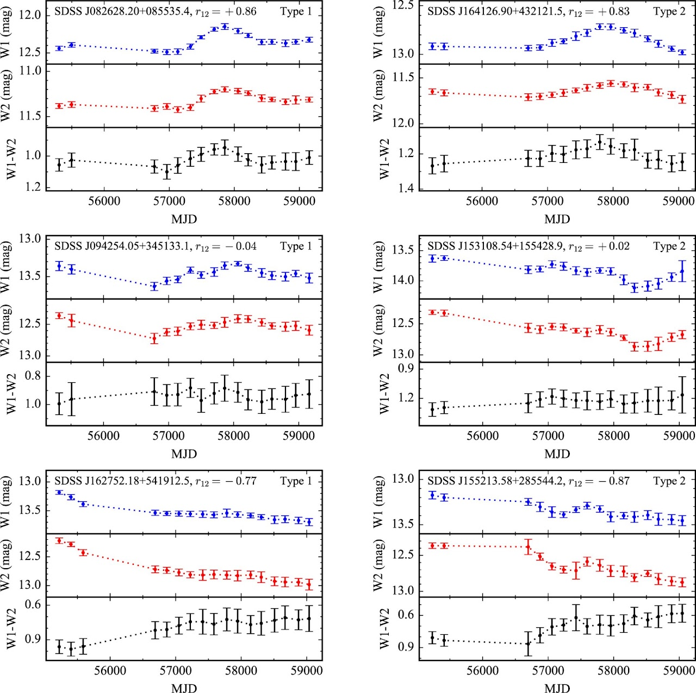
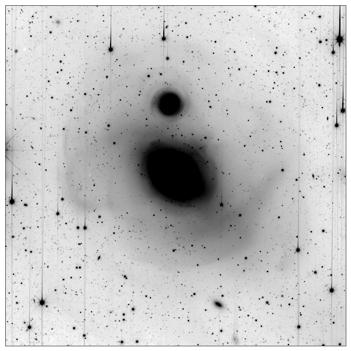

My research focuses on active galactic nuclei and their host galaxies, the evolution of nearby galaxies, and infrared surveys.
Coevolution between Active Galactic Nuclei and Host Galaxies
- "Relation between Black Hole Mass and Bulge Luminosity in Hard X-Ray Selected Type 1 AGNs", Son et al., 2022
- "A Hubble Space Telescope Imaging Survey of Low-redshift Swift-BAT Active Galaxies", Kim et al., 2021
- "Evidence for a Young Stellar Population in Nearby Type 1 Active Galaxies", Kim et al., 2019
- "Stellar Photometric Structures of the Host Galaxies of Nearby Type 1 Active Galactic Nuclei", Kim et al., 2017
- "The Origin of the Intrinsic Scatter in the Relation Between Black Hole Mass and Bulge Luminosity for Nearby Active Galaxies", Kim et al., 2008
- "Constraints on the Star Formation Rate in Active Galaxies", Kim et al., 2006
Central Structures of Active Galactic Nuclei

- "Mid-infrared Variability of Low-redshift Active Galactic Nuclei: Constraints on a Hot Dust Component with a Variable Covering Factor", Son et al., 2022
- "A Revised Calibration of the Virial Mass Estimator for Black Holes in Active Galaxies Based on Single-epoch Hβ Spectra", Ho & Kim, 2015
- "The Black Hole Mass Scale of Classical and Pseudo Bulges in Active Galaxies", Ho & Kim, 2014
Tidal Disruption Events
- "A Mid-infrared Flare in the Seyfert Galaxy NGC 3786: A Changing-look Event Triggered by an Obscured Tidal Disruption Event?", Son et al., 2022 - news article
- "The nuclear transient AT 2017gge: a tidal disruption event in a dusty and gas-rich environment and the awakening of a dormant SMBH", Onori et al., 2022
Evolution of Nearby Galaxies

- We have conducted a deep and wide imaging survey of nearby galaxies using KMTNet telescopes. (KNGS) - "KMTNet Nearby Galaxy Survey. I. Optimal Strategy for Low Surface Brightness Imaging with KMTNet", Byun et al., 2018 - "KMTNet Nearby Galaxy Survey II. Searching for Dwarf Galaxies in Deep and Wide-field Images of the NGC 1291 System", Byun et al., 2020 - "KMTNet Nearby Galaxy Survey. III. Deficient Hα Flux in the Extended Disks of Spiral Galaxies", Byun et al., 2021 - "KMTNet Nearby Galaxy Survey: Overview and Survey Description", Byun et al., 2022
Intermediate-mass Black Holes
- "Stellar properties of the host galaxy of an ultraluminous X-ray source in NGC 5252", Kim et al., 2020
- "The extended radio jet of an off-nuclear low-mass AGN in NGC 5252", Mezcua, Kim & Ho, 2018
- "Ionized Gas Kinematics around an Ultra-luminous X-Ray Source in NGC 5252: Additional Evidence for an Off-nuclear AGN", Kim et al., 2017
- "An Off-nucleus Nonstellar Black Hole in the Seyfert Galaxy NGC 5252", Kim et al., 2015
SPHEREx (The Spectro-Photometer for the History of the Universe and Ices Explorer)
- "Simulations of Torus Reverberation Mapping Experiments with SPHEREx", Kim et al., 2021
- "Science Impacts of the SPHEREx All-Sky Optical to Near-Infrared Spectral Survey: Report of a Community Workshop Examining Extragalactic, Galactic, Stellar and Planetary Science", Dore et al., 2016
- "Science Impacts of the SPHEREx All-Sky Optical to Near-Infrared Spectral Survey II: Report of a Community Workshop on the Scientific Synergies Between the SPHEREx Survey and Other Astronomy Observatories", Dore et al., 2018